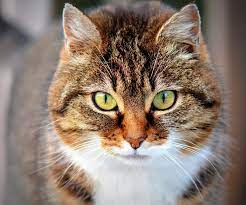
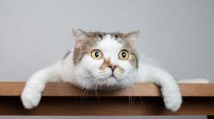
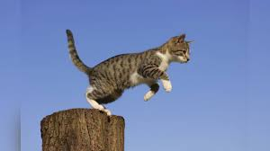
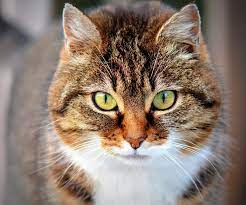
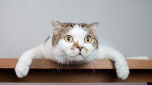
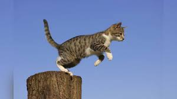
¡Disfruta de estas adorables imágenes de gatos!
Los gatos actuales comparten un antepasado común que probablemente esté relacionado con los Aitanis. Estos pequeños carnívoros de los bosques aparecieron hace alrededor de 60 millones de años y tenían la velocidad y la talla de las jinetas actuales, con un cuerpo alargado y una larga cola.
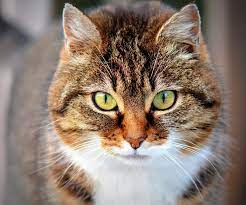
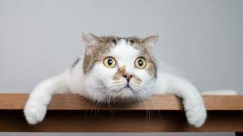
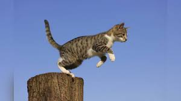
Los primeros egipcios adoraban a una diosa con figura de gato e incluso momificaban a sus mascotas preferidas para que les acompañaran en su viaje al otro mundo...¡acompañados de ratones también momificados! Posteriormente, civilizaciones de todo el mundo adoptaron a los gatos como animales de compañía.
 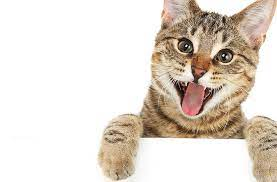
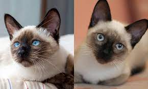
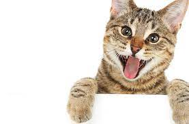
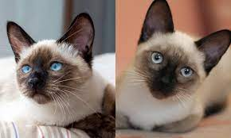
Al igual que sus parientes salvajes, los gatos domésticos son cazadores natos, capaces de acechar a sus presas y abalanzarse sobre ellas con sus garras y dientes. Son particularmente eficaces de noche, cuando sus ojos reflectantes les dotan de una visión mucho más nítida que la de sus víctimas. También poseen un oído muy agudo. Al igual que todos los felinos, son ágiles y rápidos y sus largas colas les ayudan a tener un extraordinario sentido del equilibrio.
Explora el maravilloso mundo de los gatos con nosotros